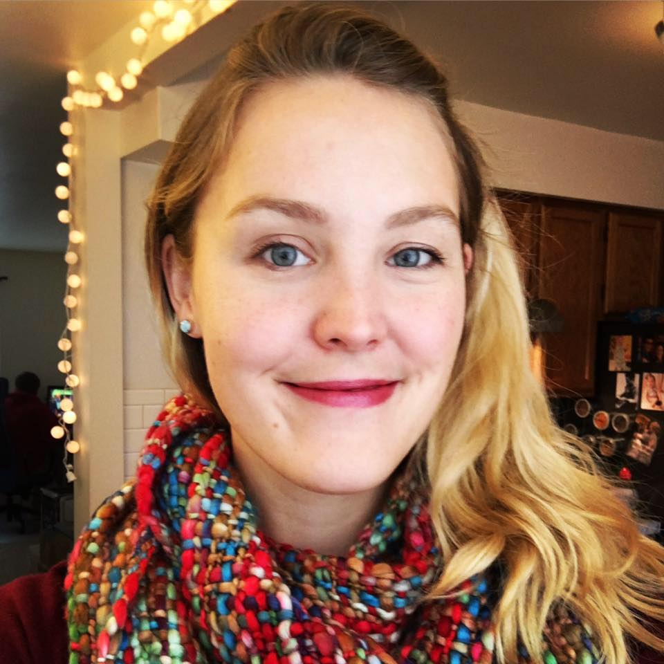

We're a group of artists, designers, programmers, and scientists - but make no mistake.
We know how to have fun. Read on to learn more about who makes up the group!
As a bass, Matt Barr frightens easily when presented with things like full words or notes above a low F. He's always eager to offer insight and assistance if the group is in danger of staying on task for more than five minutes at a time. At 6'4" he's probably the member of the group that's most looked up to. A web developer in the daytime, Matt Barr is a ridiculously avid gamer in the evenings from Dungeons & Dragons to League of Legends. Matt Barr firmly believes that the greatest trick the devil ever played on the world was making it so that when you bite your cheek it swells up so that you end up biting it again 12 more times.
If you've been to any of our performances, you may recognize Ian as the one off to the side laying down the sick beats. He also arranges many of the a cappella covers that the Acoustix sing on stage. Ian works 11-to-7 as a software engineer, but he prefers to spend his nights and weekends playing video games, exploring the mountains (on foot or on skis), learning new music, and watching way too much Netflix. When he's not singing or spitting into a microphone, Ian loves to improvise on the keyboard and violin.
meg doesn't capitalize the first letter of her name; not even when it comes at the start of a sentence. What she does capitalize on is every chance to join a physically demanding sport. You may notice that many of our songs start with 'Arr. meg': Arr is short for "arranged by" and meg is short for an arranger. In between obstacle courses, basketball and power-lifting, meg makes her living as a network architect. When she's too injured to do any of those things, she hangs out with her husband and two ferocious bichons.
Sara is new to the group, and when she isn't diligently looking over her sheet music in her spare time, she is either eating, thinking about eating or petting a dog that doesn't belong to her. She is a die-hard fan of air plants and loves ice cream sometimes more than people.
Bea is an Alto that sometimes pretends to be a Tenor. Born and raised in vibrant Mexico City and married to a Norwegian viking she finds the Pacific Northwest an amazing place to live and raise her son. She likes to consider herself a blend of software engineer, data scientist and program manager specializing in machine learning, particularly computer vision and natural language. When not singing or working, she loves throwing dinner parties and drinking lots of wine.
Chanisha hails from three islands collectively known as New Zealand. She's been living in the US since the tail end of 2013, and has been in the Acoustix for a good chunk of that time. She's been singing throughout her life, from Sri Lankan songs her mum made her sing, to the University of Auckland Glee Club. When she's not singing, she's nerding out over TV shows and movies (particularly superhero themed), nerding out over animated movies, playing video games (also includes nerding out), and sharing New Zealand lingo and pop culture. Sweet as! :)

Jenisa Barr is harmoniously married to Acoustix Bass Matt Barr. Being married to a web developer comes with some incredible benefits like getting your bio in any color you want. A stay at home mother and visual artist, Jenisa has gone from singing Ah! Vous dirai-je Maman with the South Puget Sound Community College Choir to singing Twinkle Twinkle Little Star for her adorable daughter to singing Somebody That I Used to Know with the acoustix without ever having to learn any new notes. Her other creative activities include sewing, drawing, mehndi, and creative toddler shenanigan problem solving.